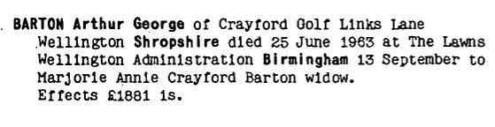
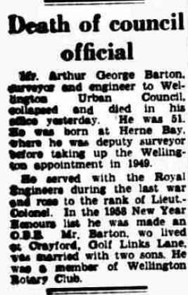
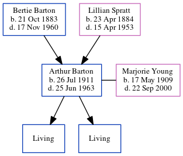

Arthur George Barton 1911 - 1963
[ Home ] | [ Calendar ] | [ Surnames Index ] | [ Errors ] | [ Family History ]The 2nd of 4 children of Bertie Barton (a builder & public work's contractor) and Lillian Spratt (a domestic general servant), Arthur Barton, the first cousin once-removed on the father's side of Nigel Horne, was born in Herne Bay, Kent, England on 26 Jul 19111,2,3 and. He married Marjorie Young (a teacher with whom he had 2 surviving children Brian C and Christopher J) in Blean, Kent, England around Aug 19365. In 1963, he was living on Golf Links Lane, Wellington, Shropshire, England6. In 1944 he was serving in the military (regiment: 583 Army Field Company Royal Engineers; Rank: Captain; Service number: 86419).
He died on 25 Jun 1963 in Wellington3,4.
Parents
- Bertie John was born on 21 Oct 1883
- Lillian was born on 23 Apr 1884
Citations
- British Army WWI Pension Records 1914-1920 Ancestry.com Operations Inc
- England & Wales births 1837-2006 - Findmypast
- England & Wales deaths 1837-2007 - Findmypast
- https://probatesearch.service.gov.uk/Calendar?surname=barton&yearOfDeath=1963&page=2#calendar
- England & Wales Marriages 1837-2005 - Findmypast
- https://probatesearch.service.gov.uk/Calendar?surname=barton&yearOfDeath=1963&page=2#calendar
Notes
Awarded OBE in the 1958 New Year's Honours List - en.wikipedia.org.
Media
Arthur George Barton - Probate

Birmingham Post - 26 Jun 1963

England & Wales births 1837-2006 - BMD/B/1911/3/AZ/000082/122
England & Wales marriages 1837-2005 - BMD/M/1936/3/AZ/000095/044
England & Wales deaths 1837-2007 - BMD/D/1963/2/AZ/000049/114
British Army, Recommendations for military honours and awards 1935-1990 - GBM/WO373/TNA/028931
British Army, Recommendations for military honours and awards 1935-1990 - GBM/WO373/TNA/073610
Family Tree
Map
Generated by ged2site. Last updated on Jul 3, 2024
Known Issues
Residence record contains no type
Listed in the residence for 1963, but spouse Marjorie Young is not
No records of living with anyone
Location for "military service" on 1944 is empty
1939 UK register information missing
Location for "military service" on 1944 is empty